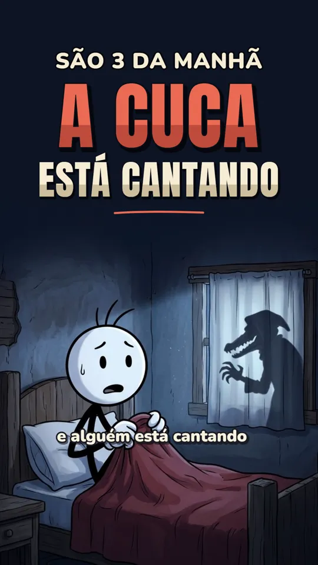
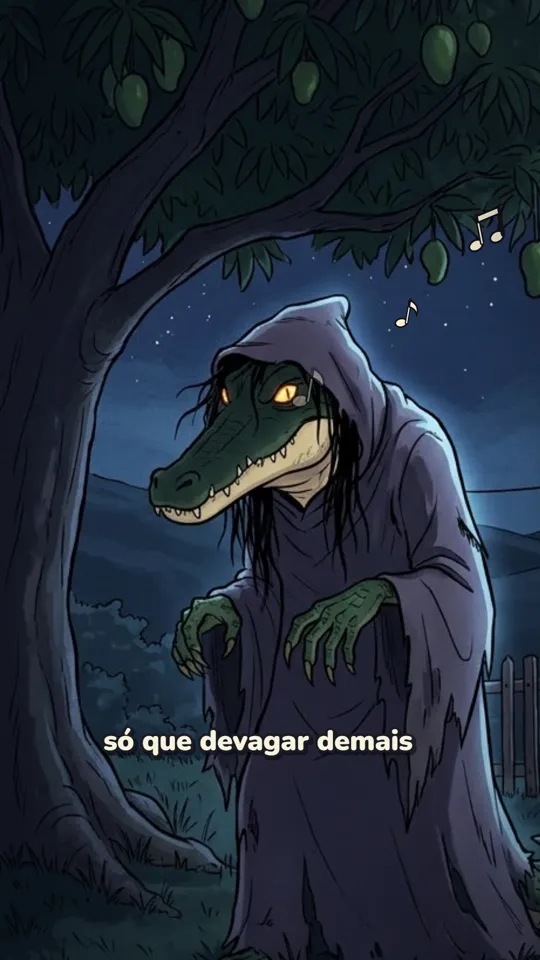
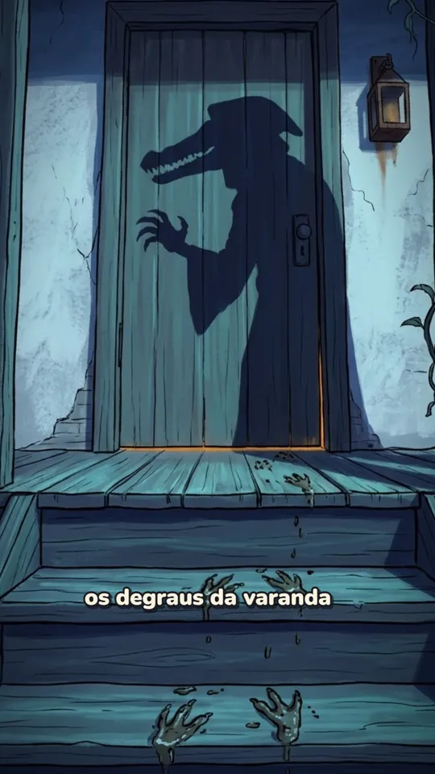
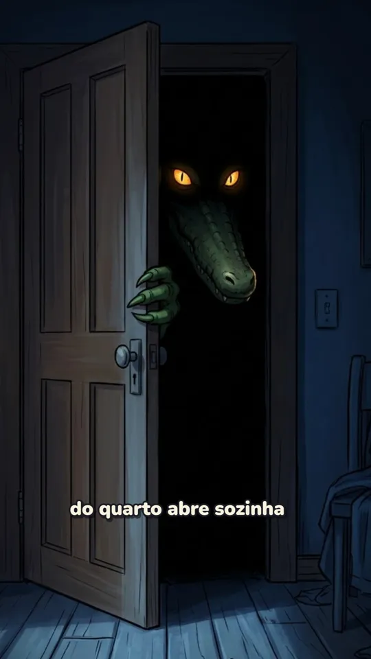
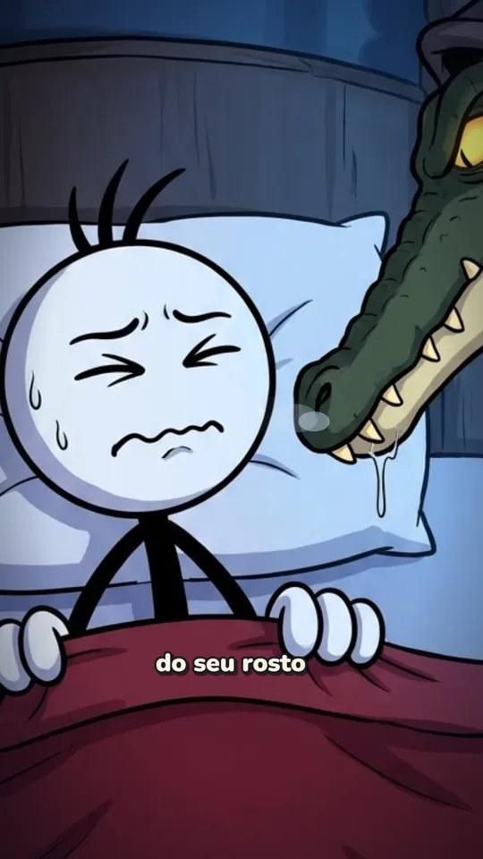
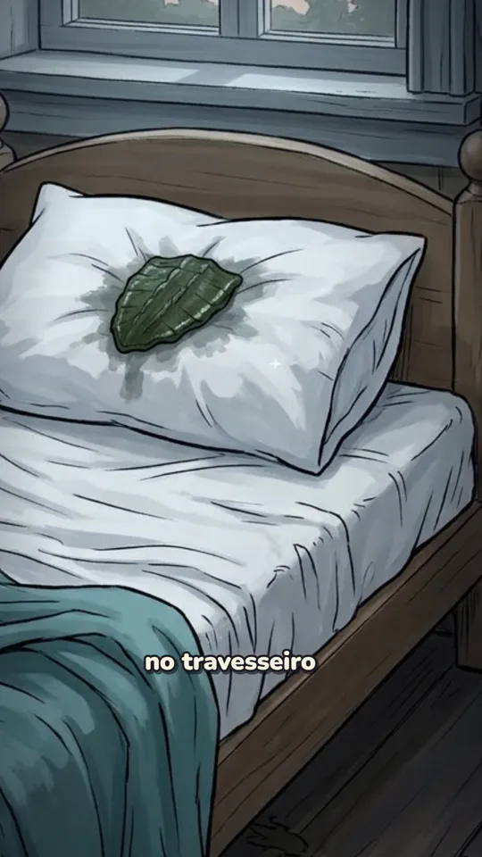

Três segundos, no máximo
Nenhum plano e nenhuma imagem parada duram mais que isso. Trocar a legenda ou dar um leve zoom não conta como mudança.
Um resumo do método do Stickman Video Director, um projeto aberto que ensina um assistente de IA a dirigir vídeos de boneco palito. Testamos o estilo B4, de suspense, em um Short de terror sobre a Cuca. Aqui estão o método, os prompts e o que deu certo e errado.
O vídeo de exemplo: "A Cuca está cantando"
De onde vem o método. O Stickman Video Director é de kaomei e Avery, com licença MIT. Esta página é um resumo com palavras nossas do guia publicado por Avery e da documentação do repositório, mais o relato do nosso teste.
Um assistente como o Claude Code lê, escreve e roda ferramentas, mas não sabe sozinho o ofício de um bom vídeo de boneco palito. O projeto entrega esse ofício como um skill: um manual de regras mais uma caixa de ferramentas. Você escolhe um de dois jeitos de produzir.
| Peça | Motor A, de modelo | Motor B, de código |
|---|---|---|
| Quem faz a imagem | Um gerador de vídeo, como o Google Flow, filma cada cena | O seu computador desenha as peças e anima por código |
| Papel do assistente | Escreve a história, o storyboard e um prompt fechado por cena | Escreve o roteiro, monta personagens e cenários, anima e renderiza |
| O que você faz | Cola os prompts no gerador, ou deixa o assistente operar o navegador | Aprova o roteiro e uma amostra de 20 segundos com áudio |
| Personagem igual em toda cena | Só com imagem de referência | Sim, as peças são reaproveitadas |
| Custo | Créditos do gerador de vídeo | Pode sair de graça |
| Quando escolher | Você quer movimento de cinema e já tem créditos | Você quer o primeiro vídeo hoje, sem gastar |
O que os dois têm em comum. Partem de qualquer coisa: uma frase, um artigo, um link ou um roteiro pronto. Aceitam tela deitada ou em pé. E nos dois o assistente mostra o plano primeiro: nada é gerado antes do seu sim.
O código vai dentro do pedido. Os da letra A pertencem ao motor de modelo e os da letra B ao motor de código. O repositório tem vídeos de amostra de todos.
| Código | Motor A |
|---|---|
| A1 | Preto e branco clássico |
| A2 | Pop moderno |
| A3 | Cavernas da pré história |
| A4 | Histórias acolhedoras |
| A5 | Cartoon histórico |
| A6 | Noir em âmbar |
| A7 | Desenho antigo de mangueira |
| A8 | Inspirado no Ghibli |
| Código | Motor B |
|---|---|
| B1 | Traço minimalista, bom para explicar ideias |
| B2 | Desenho à mão colorido, para hábitos e psicologia do dia a dia |
| B3 | TV antiga |
| B4 | Suspense de sobrevivência, o que testamos aqui |
| B5 | Explicação com personagem |
| B6 | História em meme |
| B7 | Teatro em pixel |
| B8 | Mitologia grega |
Fazer um vídeo animado ficou fácil. O que continua difícil é o primeiro segundo, e é para ele que o método gasta as regras.
O caminho do guia original, sem a parte de divulgação.
SKILL.md. No primeiro uso ele confere o que falta na máquina e ajuda a instalar.A chave fica fora do chat. O assistente explica como criar a chave do serviço de voz e onde guardar: em um arquivo privado no seu computador. Não cole a chave na conversa.
O pedido foi curto: um vídeo no estilo B4, de terror, com ElevenLabs e roteiro inspirado na Cuca do folclore brasileiro. O caminho teve três tentativas de imagem, e a terceira é a que você vê no vídeo.
Desenho por código, sem gerador de imagem.
Saiu de graça e consistente, mas simples demais perto das amostras do B4. Foi descartado.Ilustrações geradas pela ElevenLabs, com as imagens de referência do B4 anexadas.
O estilo bateu, mas o plano gratuito libera só 3 imagens por dia.Ilustrações geradas no Google Flow, com o Claude operando o navegador.
15 cenas, duas variações de cada, sem custo. O Claude monta, anima e renderiza por cima.Fizemos um híbrido. Não instalamos o skill: lemos as regras do estilo B4 e aplicamos no nosso projeto Remotion. As ilustrações vieram de um gerador de imagem, como no motor A. A câmera, os letreiros, as legendas, a voz e o render ficaram por conta do código, como no motor B.






Os 6 quadros enviados para aprovação antes do render.
São 25 frases em segunda pessoa, no molde das histórias de regras de sobrevivência: um perigo, três regras e uma escolha no final para o público responder nos comentários.
São três da manhã, e alguém está cantando no seu quintal. É a cantiga de ninar da sua avó, só que devagar demais. Antes de morrer, ela te deixou três regras para esta noite. Regra um: quando a cantiga começar, apague a luz e deite. Você apaga a luz, e a cantiga para. Alguma coisa pesada sobe os degraus da varanda. Regra dois: a Cuca só leva quem está acordado. Então feche os olhos e respire devagar. A porta do quarto abre sozinha. O assoalho range: um passo, dois, três. Um cheiro de lama de rio enche o quarto. O colchão afunda do seu lado. Um focinho comprido e gelado para a um palmo do seu rosto. Ela fareja, e espera você piscar. Regra três: ela usa a voz de quem você ama. Nunca responda. Abre o olho, meu bem, é a vovó. A voz é igualzinha, mas a sua avó está enterrada desde março. Você não responde, só conta as respirações. O colchão sobe, os passos se afastam, a porta fecha. Você só abre os olhos quando o galo canta. Tem sol na janela. Você conseguiu. Aí você olha para a cama do seu irmão. Vazia, com o cobertor no chão e uma escama molhada no travesseiro. No quintal, a cantiga recomeça, agora com a voz dele. Você abre a porta, ou volta para a cama?
Os dois primeiros são para quem instalou o skill. Os três últimos são os que usamos no nosso híbrido e funcionam em qualquer projeto Remotion.
Instale este skill: https://github.com/kaomei/stickman-video-director Depois de instalar, leia o SKILL.md, confira o que falta no meu computador e me avise quando estiver pronto.
Use o motor de código (modo B) para transformar este tema em um vídeo de boneco palito: [TEMA, TEXTO OU LINK] Formato: vertical 9:16, 90 segundos, estilo B4 "Suspense de sobrevivência", com narração, legendas e efeitos sonoros. Primeiro confira as ferramentas de imagem e de render do meu computador e me mostre o roteiro completo e uma amostra com áudio dos primeiros 20 segundos. Só depois da minha aprovação produza e renderize o vídeo inteiro.
Para o motor de modelo, troque a primeira linha por "Use o motor de modelos (modo A)" e peça a estrutura da história, a direção de som e o storyboard antes dos prompts de cada cena. O texto original dos dois pedidos está no README do repositório.
Escreva a narração de um Short de terror de 1:30 inspirado em [LENDA], em português do Brasil, em segunda pessoa ("você").
Estrutura: uma frase de abertura com hora, lugar e algo errado → três regras para sobreviver à noite, cada uma seguida da cena em que ela é testada → a regra mais cruel por último → alívio falso → uma descoberta que muda tudo → uma pergunta com duas escolhas para o público responder.
Regras:
- 200 a 240 palavras, uma frase por linha;
- frases de até 14 palavras;
- toda frase precisa de uma imagem que dê para desenhar;
- o monstro aparece aos poucos: primeiro som, depois sombra, depois um pedaço, só então o rosto;
- nada de sangue: o medo vem do que quase acontece;
- não cite letra de música nem fala de obra que exista.
Entregue só a narração.
STYLE: refined full-color 2D hand-drawn story illustration, like a frame of a 2D animated thriller: clear black ink contours, broad painted color fields, restrained cel-shaded shadows, detailed readable painted background, one coherent outlined 2D treatment, not photorealistic, not 3D. CHARACTERS are stick figures: plain circular pure-white head, small solid black oval eyes, thin eyebrows, single thick black line torso, thick black stick limbs, compact rounded white cartoon gloves outlined in black, no clothes, no realistic skin. THE BOY: stick-figure child with three short thin black hair strands sticking up on top of his head. THE CUCA (Brazilian folklore): tall hunched old witch in a ragged dark purple-gray hooded cloak with the hood up; long dark-green crocodile head with cream lower jaw and cream teeth, glowing amber-yellow eyes, long stringy black hair hanging from under the hood, green three-clawed hands. SCENE: [descreva o lugar, a hora, quem aparece, o que cada um faz e onde fica na imagem]. Night palette of broad cool blue fields with small warm accents, legible, no crushed black, no heavy bloom, no gore. Portrait 9:16. No text, no letters, no captions, no speech bubbles, no watermark.
Por que em inglês. Os geradores de imagem seguem melhor instruções em inglês. Repetir a descrição do menino e da Cuca palavra por palavra em toda cena foi o que manteve os dois iguais do começo ao fim, mesmo sem imagem de referência.
Monte o vídeo desta narração sobre as ilustrações da pasta public/, em 1080x1920, 30 fps, seguindo as regras do estilo B4: 1. Nenhum plano passa de 3 segundos. Frases longas viram dois ou três planos, cortados no começo de uma palavra. 2. Cada plano usa uma ilustração com um enquadramento próprio e uma mudança visível: câmera lenta, luz que apaga, olhos que acendem, pálpebras que fecham, fumaça, notas musicais. 3. Abertura em pôster: chamada curta no alto, depois o bloco inteiro do título entra de uma vez, com a figura na metade de baixo. 4. Cada regra da história ganha um cartão "REGRA 1", "REGRA 2", "REGRA 3" no alto da tela. 5. Legendas em uma linha por grupo de sentido, branco quente com contorno escuro, sem caixa, no terço inferior. 6. Os dois últimos planos mostram as escolhas A e B. Antes do render, gere um quadro de cada plano em baixa resolução, revise os enquadramentos e me mostre 6 quadros em tamanho real. Depois de eu aprovar, renderize e confira quadros tirados do próprio MP4.
A documentação do B4 é longa. Estas são as regras que mais mudaram o nosso vídeo.
Nenhum plano e nenhuma imagem parada duram mais que isso. Trocar a legenda ou dar um leve zoom não conta como mudança.
Escuro, névoa e som pesado não substituem a ameaça desenhada. Sem som e sem legenda, o plano ainda precisa mostrar o que há de errado.
Primeiro o rastro, depois a sombra, depois um pedaço. Mostrar o monstro inteiro cedo demais gasta o susto.
Uma chamada curta entra primeiro. O bloco de impacto entra inteiro logo depois, nunca letra por letra, e assenta com um leve recuo.
Cabeça redonda branca, olhos pretos pequenos, corpo de traço preto e luvas brancas arredondadas. Cabelo ou acessório só para diferenciar personagens.
Uma linha por grupo de palavras que faz sentido junto, quebrada onde a fala respira. Sem caixa de fundo e sem palavra colorida obrigatória.
O skill traz uma biblioteca de áudio com a licença de cada arquivo registrada. Usamos uma música e 15 efeitos dela, mixados nos tempos da narração.
| Momento | Som | Por quê |
|---|---|---|
| O vídeo inteiro | Música de suspense, cerca de 16 dB abaixo da voz | Segura a tensão sem disputar com a narração |
| 0:20 | A música some por um instante | A frase diz que a cantiga para. O silêncio é o efeito |
| 0:22 | Três batidas pesadas na madeira e um rangido | Os degraus da varanda |
| 0:31 | Porta abrindo e rangendo | A porta do quarto abre sozinha |
| 0:35 | Um passo em cada número, cada vez mais forte | "Um passo, dois, três" |
| 0:41 e 1:05 | Tecido | O colchão afunda e depois sobe |
| 1:06 | Passos sumindo e a porta batendo | Ela vai embora |
| 1:09 a 1:22 | Sem música, só pássaros | O alívio falso da manhã |
| 1:22 | A música volta | A cantiga recomeça no quintal |
Adicione som ao vídeo já renderizado, sem renderizar a imagem de novo. 1. Use só sons com licença registrada (CC0 ou CC BY) e me diga a origem e a licença de cada um. 2. Música baixa e contínua, uns 15 dB abaixo da voz. A voz sempre na frente. 3. Um efeito para cada acontecimento que a narração descreve, no tempo exato da palavra. 4. Use o silêncio: corte a música quando a história pedir. 5. Normalize a voz em -16 LUFS e limite o pico em -1 dB. 6. Meça o nível da base sem a voz e do resultado final e me mostre os números. 7. Escreva o texto de crédito pronto para a descrição do vídeo.
Crédito obrigatório. Música: "Classic Horror 1" Kevin MacLeod (incompetech.com), licença Creative Commons Atribuição 4.0, editada (volume reduzido e trechos silenciados). Os efeitos são de Kenney, OwlishMedia e isaiah658, todos em CC0. Quem escolheu os sons foi o Claude, que não ouve áudio: a escolha saiu da descrição de cada arquivo e a mixagem foi conferida por medição, não por ouvido.
A Cuca é uma lenda. O desenho dela em livros, séries e programas tem dono. Crie o seu visual e não imite o de uma obra conhecida.
O skill é MIT e pode ser usado em vídeo comercial. Música, efeitos, voz e imagens seguem as regras de cada serviço. O plano gratuito da ElevenLabs não dá licença comercial.
Confira as regras de cada plataforma sobre avisar que o vídeo usa imagem ou voz geradas por IA.
Sem sangue e sem violência mostrada. Mesmo assim, marque o vídeo como não feito para crianças.
O primeiro costuma pedir ajustes, e ajustar roteiro não custa nada.